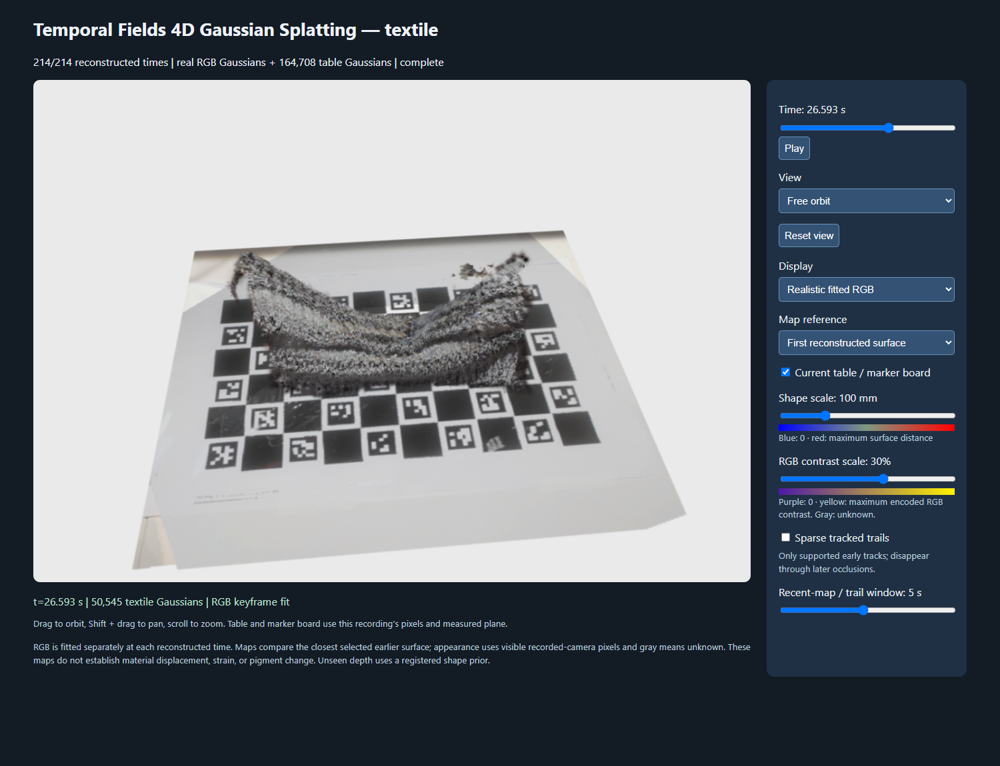

STAGE 28 · validated · 2026-10-08T22:05:23.6243546Z
Selected current-session context in local RGB replay
The completed local viewer reports214 reconstructed times and164,708 table Gaussians. The elevated view at26.593 seconds shows real knit texture and the lifted surface. All modes and first/recent reference behavior passed the real API checks after the context change.

Genuine local browser screenshot; see accompanying capture metadata